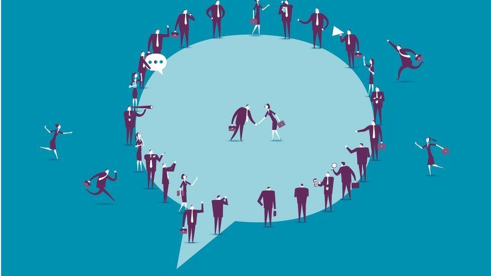

Social media continues to serve as a vehicle for disseminating large volumes of information to greater audiences as an alternative to traditional news sources. An effect of this is the spread of misinformation, as well as less exposure to diverse opinions and differing perspectives, resulting in echo chambers.
Echo chambers are defined as a “place in which people only encounter beliefs, opinions, or views that reflect and reinforce their own” (Jiang et al, 2021). The 2016 US presidential election and the COVID-19 “infodemic” are proof that misinformation is present and active in social media, the algorithms that influence our social feeds being a major factor in the exacerbation of these echo chambers that are deepening the divide between users of differing opinions and stances.
Echo chambers have been characterized by diffusion of misinformation. Since social media platforms are easily accessible, content is becoming increasingly easy to disseminate. As a byproduct of this accessibility, online platforms lack regulation, meaning that the credibility and often the accuracy of content is of lower quality than traditional news media. Echo chambers contribute to this phenomenon by excluding differing opinions, promoting confirmation bias, and permitting misinformation to obtain virality.
Extreme emotions are exposed and echoed by echo chambers, and are usually caused by users who continually receive or consume misleading content and conspiracy theories. In other words, those who are more likely to view controversial and conspiracy topics or misinformation are more affected by it.
Ahmed et al. conducted a COVID-19 case study in China, investigating young people aged 21-40 years old who suffered psychological repercussions during COVID-19 pandemic. The study assessed the mental health status of Chinese people, and showed higher rates of anxiety, depression, harmful alcohol use, and low mental wellbeing.
Another study by Del et al. found that inside echo chambers, active users are more highly emotional compared to those who are less active, indicating a correlation between higher social media involvement and increased negative mental attitudes.
Online discussions of misinformation or misinformed content are often sparked by heated discussions and debates, which has led to emotionally charged conversations online. Similarly, misinformation is more likely to be associated with negative emotions (anger, sadness, etc), and is more likely to spread deeply within social networks.
Finally, echo chambers are characterized by increasing levels of political polarization and deep partisan divides. The 2020 US presidential elections revealed record levels of extreme ideological polarization within the country, amplified by online discourse and social media circles (Colleoni et al). Within echo chambers, identified by like-minded individuals, party affiliation naturally reinforced partisan bias, contributing to the deepening separation between political parties.
Social media platforms are providing easy and direct access to an increasing amount of content, most of which is of lesser quality than the information derived from news sources and thus lacks professional fact checking and verification. And while it can be argued that the algorithms influencing our social feeds influence the information and media we consume, ultimately it is up to the individual to choose to be exposed to attitude-challenging content.
The net and digital technology is transforming into one that promotes personalization and tailoring the experience to the individual, and this loss of cross-cutting discourse in social media is narrowing our perspectives instead of broadening them. The concern arises when we consider the persistence of misinformation in “echo-chambers” which diminishes thoughtful discussion and cross-cutting perspectives.
Additionally, there should be concern that the diffusion of misinformation carries with it negative emotions, which has been shown to contaminate an individuals’ emotional well-being and mental health when they consume negative social media content.